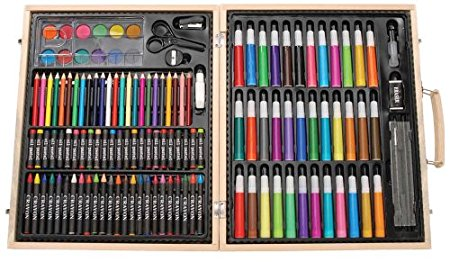

My name is Adam Gincel, and I was born with protanomaly, a condition in which the L-cones in my eyes are less functional than the average person's, which limits my perception of specific spectrums of light. This is more commonly known as red-green colorblindness.
I had always had troubles with colors growing up, but it was pretty easy to hide this by combining basic common knowledge ("grass is green", "the sky is blue", "fire hydrants are red") and by reading the labels on crayons. I had my suspicions, but no time really seemed relevant to speak up and say "wait, is this easy for everyone else?"
Flash forward to the 7th grade, in middle school. We had an art teacher who was notorious among the students for being harsh, mean, and generally scary. She was nice enough to me because I didn't abuse her art supplies, but I digress. She taught a lesson on cross-hatching, which involves using two colors in intersecting diagonal lines to watch the colors blend, and then assigned a simple homework assignment: create your own cross-hatch between red and green.
You may be thinking: "Adam, why didn't you do what you always did, and use the labels on crayons?" Well, fine reader, let me introduce you to the bane of my middle and high school artistic career...
Those art sets were all the rage for parents -- a single $25 purchase gave you all the art supplies you needed for any project for the next year or two, fun for all ages. The problem: there were no labels on the crayons, colored pencils, or markers. This was devastating to my ploy -- I was above asking for help identifying colors, so I did the only thing I could: I picked up what I thought was green, I picked up what I thought was red, and I did my art homework
The next day rolls around and I bring in my finished homework. "Not bad", I thought to myself as I compared it to the sheets belonging to the kids on either side of me. "This will be fine." The class was silent as the feared art teacher walked around the room, examining the homework, occasionally commenting, and checking off the students who did or did not complete their assignments. She did this at an even pace through the room, until she got behind me.
I was staring at the clock during this. I remember this fact, because those were the longest five seconds of my life. She stood behind me ominously and didn't say anything for a good few seconds. Finally, she spoke: "Don't mind me asking this, but...are you color blind?"
My cheeks went bright red. I was so morified I wanted to choke, but finally I answered "...yeah, I think I am." She was merciful and didn't take any points off, and the rest of that class went about as smoothly as it could have all things considered. My classmates, however, were fascinated. At the end of the period I was bombarded with questions like "what color is this?" and "so wait, does that mean you can't see my red sweatshirt?"
This has been my life since that day. It makes for great small talk, so honestly I'm not that worried about it. I prefer the sciency explanation I used at the beginning, because it usually cuts back on the sillier questions.
So that's the story about the time I realized I was color blind.